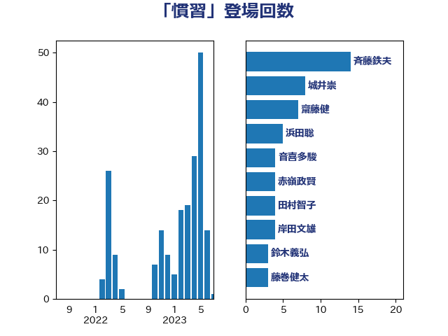

単語「慣習」

| 斉藤鉄夫 | 公明党 | 14 回 |
| 城井崇 | 立憲民主党 | 8 回 |
| 齋藤健 | 自由民主党 | 7 回 |
| 浜田聡 | NHK党 | 5 回 |
| 音喜多駿 | 日本維新の会 | 4 回 |
| 赤嶺政賢 | 日本共産党 | 4 回 |
| 田村智子 | 日本共産党 | 4 回 |
| 岸田文雄 | 自由民主党 | 4 回 |
| 鈴木義弘 | 国民民主党 | 3 回 |
| 藤巻健太 | 日本維新の会 | 3 回 |
| 浜野喜史 | 国民民主党 | 3 回 |
| 水野素子 | 立憲民主党 | 3 回 |
| 森屋隆 | 立憲民主党 | 3 回 |
| 柳ヶ瀬裕文 | 日本維新の会 | 3 回 |
| 小宮山泰子 | 立憲民主党 | 3 回 |
| 堀場幸子 | 日本維新の会 | 3 回 |
| 高見康裕 | 自由民主党 | 2 回 |
| 長友慎治 | 国民民主党 | 2 回 |
| 鈴木宗男 | 日本維新の会 | 2 回 |
| 鈴木俊一 | 自由民主党 | 2 回 |
| 金村龍那 | 日本維新の会 | 2 回 |
| 辻元清美 | 立憲民主党 | 2 回 |
| 若宮健嗣 | 自由民主党 | 2 回 |
| 紙智子 | 日本共産党 | 2 回 |
| 簗和生 | 自由民主党 | 2 回 |
| 石井苗子 | 日本維新の会 | 2 回 |
| 泉健太 | 立憲民主党 | 2 回 |
| 林芳正 | 自由民主党 | 2 回 |
| 東徹 | 日本維新の会 | 2 回 |
| 岸真紀子 | 立憲民主党 | 2 回 |
| 古屋圭司 | 自由民主党 | 2 回 |
| 上野賢一郎 | 自由民主党 | 2 回 |
| 鬼木誠 | 立憲民主党 | 1 回 |
| 高橋光男 | 公明党 | 1 回 |
| 鈴木貴子 | 自由民主党 | 1 回 |
| 野田聖子 | 自由民主党 | 1 回 |
| 西田昭二 | 自由民主党 | 1 回 |
| 西村智奈美 | 立憲民主党 | 1 回 |
| 西村康稔 | 自由民主党 | 1 回 |
| 礒崎哲史 | 国民民主党 | 1 回 |
| 矢倉克夫 | 公明党 | 1 回 |
| 牧野たかお | 自由民主党 | 1 回 |
| 牧島かれん | 自由民主党 | 1 回 |
| 牧山ひろえ | 立憲民主党 | 1 回 |
| 清水貴之 | 日本維新の会 | 1 回 |
| 浜田靖一 | 自由民主党 | 1 回 |
| 浅野哲 | 国民民主党 | 1 回 |
| 沢田良 | 日本維新の会 | 1 回 |
| 梅村聡 | 日本維新の会 | 1 回 |
| 村田享子 | 立憲民主党 | 1 回 |
| 本村伸子 | 日本共産党 | 1 回 |
| 広瀬めぐみ | 自由民主党 | 1 回 |
| 平木大作 | 公明党 | 1 回 |
| 山口晋 | 自由民主党 | 1 回 |
| 山口壯 | 自由民主党 | 1 回 |
| 小野泰輔 | 日本維新の会 | 1 回 |
| 小池晃 | 日本共産党 | 1 回 |
| 宮本岳志 | 日本共産党 | 1 回 |
| 大野泰正 | 自由民主党 | 1 回 |
| 塩田博昭 | 公明党 | 1 回 |
| 塩村あやか | 立憲民主党 | 1 回 |
| 吉田統彦 | 立憲民主党 | 1 回 |
| 吉田とも代 | 日本維新の会 | 1 回 |
| 古庄玄知 | 自由民主党 | 1 回 |
| 加藤勝信 | 自由民主党 | 1 回 |
| 中条きよし | 日本維新の会 | 1 回 |
| 上田勇 | 公明党 | 1 回 |